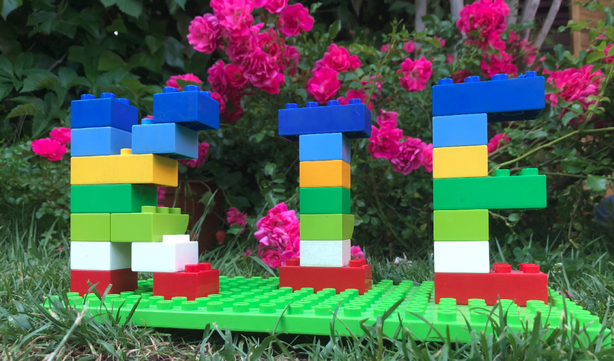

Custom Layered Immutable Spring Boot Kie Server

When creating an image for an immutable Spring Boot Kie Server application, it is possible to split up the files and folders belonging to the fat-jar into different layers.
Main advantages of this approach are:
- Libraries, code, and resources are grouped into layers based on the likelihood to change between builds. This reduces the image generation time.
- Layers downloaded once (saving disk space and bandwidth) and reused for other images.
- Execution over the unzipped classes is a little bit faster than launching the fat-jar:
java -jar app.jar
Considering all these points, it is completely meaningful to layer the immutable Spring Boot Kie Server -isolating the KJARs into a new custom layer- as business assets in KJARs are more likely to change.
Packaging Spring Boot Kie Server with layers
The spring-boot-maven-plugin is in charge of creating the immutable fat-jar containing all the KJAR files and their dependencies. For triggering this process, just add the following properties to the Spring Boot application.properties file:
kieserver.classPathContainer=true
kieserver.autoScanDeployments=trueNext, we have to enable the layers into the pom.xml, pointing out to the configuration file layers.xml where we define how the folders, files, and resources are separated into different layers and the order of them.
<plugin>
<groupId>org.springframework.boot</groupId>
<artifactId>spring-boot-maven-plugin</artifactId>
<version>${springboot.version}</version>
<configuration>
<layers>
<enabled>true</enabled>
<configuration>${project.basedir}/src/layers.xml</configuration>
</layers>
<image>
<name>${spring-boot.build-image.name}</name>
</image>
</configuration>
<executions>
<execution>
<goals>
<goal>repackage</goal>
</goals>
</execution>
</executions>
</plugin>In this layers.xml file, we define the following layers in this order (the first four are default ones, adding custom kjars layer at the end, as it is the more likely to change during application lifetime):
dependenciesany dependency whose version does not contain SNAPSHOT.spring-boot-loaderfor the loader classes.snapshot-dependenciesdependencies whose version contains SNAPSHOT.applicationfor local module dependencies, application classes, and resources butKJARs.kjarsfor all theKJARsin theBOOT-INF/classes/KIE-INFfolder, which were separated duringpackage-dependencies-kjargoal execution.
<layers xmlns="http://www.springframework.org/schema/boot/layers"
xmlns:xsi="http://www.w3.org/2001/XMLSchema-instance"
xsi:schemaLocation="http://www.springframework.org/schema/boot/layers
https://www.springframework.org/schema/boot/layers/layers-2.5.xsd">
<application>
<into layer="spring-boot-loader">
<include>org/springframework/boot/loader/**</include>
</into>
<into layer="kjars">
<include>BOOT-INF/classes/KIE-INF/**</include>
</into>
<into layer="application" />
</application>
<dependencies>
<into layer="snapshot-dependencies">
<include>*:*:*SNAPSHOT</include>
</into>
<into layer="dependencies">
<includeModuleDependencies />
</into>
</dependencies>
<layerOrder>
<layer>dependencies</layer>
<layer>spring-boot-loader</layer>
<layer>snapshot-dependencies</layer>
<layer>application</layer>
<layer>kjars</layer>
</layerOrder>
</layers>Finally, once we have the configuration of the pom.xml and layers.xml set up, we may launch the package process by invoking to the maven command:
$ mvn clean package -DskipTests
Spring Boot Kie Server Layers inspect
We can check out the result of this layering process using the property jarmode=layertools with the list argument for the generated fat-jar:
$ java -Djarmode=layertools -jar target/immutable-springboot-kie-server-1.0.0.jar list
dependencies
spring-boot-loader
snapshot-dependencies
application
kjarsOur custom kjars layer is the last one as defined in the layerOrder node of layers.xml file.
Another interesting file we may check out is the layers.idx where packaging information (separated folders and layer order) is stored.
$ cat application/BOOT-INF/layers.idx - "dependencies": - "BOOT-INF/lib/" - "spring-boot-loader": - "org/" - "snapshot-dependencies": - "application": - "BOOT-INF/classes/application.properties" - "BOOT-INF/classes/org/" - "BOOT-INF/classes/quartz-db.properties" - "BOOT-INF/classpath.idx" - "BOOT-INF/layers.idx" - "META-INF/" - "kjars": - "BOOT-INF/classes/KIE-INF/"
Moreover, we can extract the layers again using the property jarmode=layertools with the extract argument for the generated fat-jar:
$ java -Djarmode=layertools -jar target/immutable-springboot-kie-server-1.0.0.jar extract
$ tree kjars
kjars
└── BOOT-INF
└── classes
└── KIE-INF
└── lib
├── kjar-sample-1.0.0.jar
├── kjar-sample-1.1.0.jar
└── other-kjar-1.0.0.jar
4 directories, 3 files
We can use this utility in the Dockerfile for easily extracting the layers of the fat-jar and dockerize our immutable Spring Boot Kie Server application.
Layered Dockerfile
We can define a multi-stage Dockerfile to take advantage of this layering and build the image:
FROM openjdk:8-slim as builder
WORKDIR application
ARG JAR_FILE=target/*.jar
COPY ${JAR_FILE} immutable-springboot-kie-server-1.0.0.jar
RUN java -Djarmode=layertools -jar immutable-springboot-kie-server-1.0.0.jar extract
FROM openjdk:8-slim
WORKDIR application
COPY --from=builder application/dependencies/ ./
COPY --from=builder application/spring-boot-loader/ ./
COPY --from=builder application/snapshot-dependencies/ ./
COPY --from=builder application/application/ ./
COPY --from=builder application/kjars/ ./
ENTRYPOINT ["java", "org.springframework.boot.loader.JarLauncher"]TIP: You may consider any other layering depending on the likelihood of changes for the grouped libraries, code, and resources.
Happy layering!!